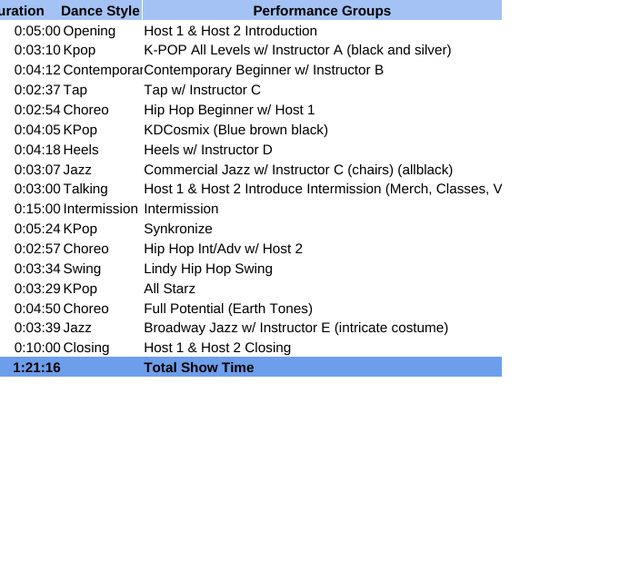
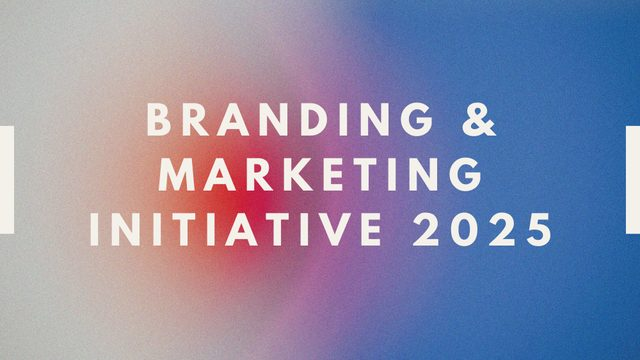

Projects
Selected marketing projects with the actual deliverables attached: a production calculator built in Excel, a branding initiative deck, and an award winning market research study.

Marketing Coordinator, Purdance Studio
Digital Marketing: Redesigned WordPress event pages and launched targeted Mailchimp campaigns, boosting email engagement by 20% and driving a 10% increase in ticket sales.
Project Management: Directed the annual studio showcase for 80+ performers, managing logistics, rehearsals, and schedules for performers in studio and guest performers. Engineered an Excel based scheduling and forecasting tool (the show calculator) that improved on time task completion: it totals show running time from per act durations, builds the performance run order with cumulative start times, and schedules tech rehearsals back to back from a single start time.

PFLAG Membership & Retention Strategy
Strategy Development: Analyzed 3 years of membership data to identify trends in engagement and drop off; uncovered key insights leading to new retention strategies.
Marketing Initiatives: Designed new branded marketing materials, including business cards and messaging guidelines. Developing a chapter toolkit to support member onboarding and scalable event promotion. The 2025 initiative deck covers physical branding and outreach, digital marketing engagement, and paid media planning.
Market Research & Product Development, SJSU
Collaborated with a team of fellow students on a semester long project to assess market demand and user needs for a new product concept (Ozone Bodycare). Conducted surveys, analyzed data, and helped shape product positioning.
Presented the findings to a panel of marketing professionals and the project was awarded first place.
Omni Channel Marketing, Lululemon (Forage)
Developed a comprehensive omnichannel digital marketing strategy for Lululemon, focusing on target audience alignment and market positioning.
Analyzed metrics from a mock Lululemon ambassador campaign, calculating ROI, conversion rates, and engagement rates to deliver optimization recommendations.